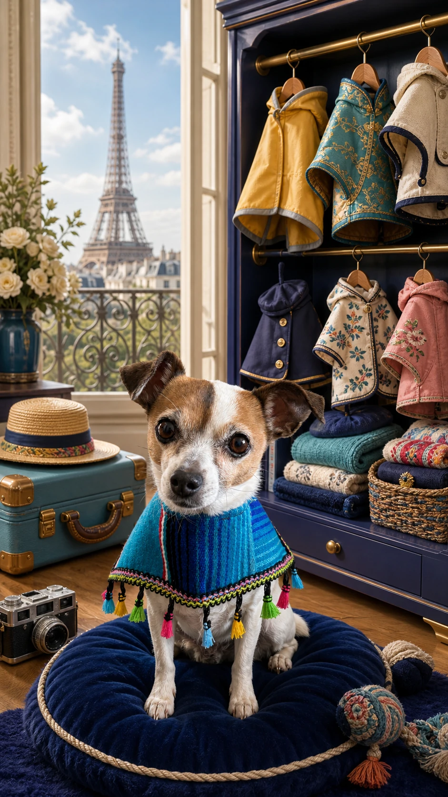

Carnet canin parisien
Salsa
Type chihuahua · Petite globe-trotteuse
Je suis née à Toluca, puis la chance m’a menée jusqu’à Lulu et Hugh De France. Aujourd’hui, Paris est ma maison, entre deux jolis voyages.
Encontré a SalsaMi personalidad
Mi expediente
- Especie
- Chienne
- Raza
- Type chihuahua
- Nacimiento
- Née à Toluca, Mexique
- Peso
- À confirmer
- Color
- À confirmer
- Microchip
- À confirmer
Mis vacunas
- ✓ CHPPi / CHPLÀ confirmer
- ✓ Leptospirose (L)À confirmer
- ✓ Toux du chenil (Bordetella)À confirmer
- ✓ Rage (voyages)À confirmer
En caso de extravío
Ayúdame a volver a casa
Si vous avez trouvé Salsa pendant l’un de ses voyages, merci de prévenir sa famille.
Avisar por WhatsApp
Recordatorios veterinarios activos
Sa famille peut recevoir des rappels privés avant les vaccins, les voyages et les visites vétérinaires.